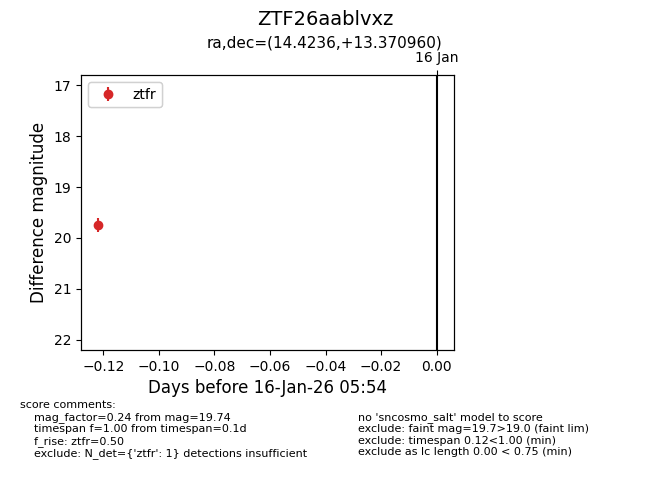
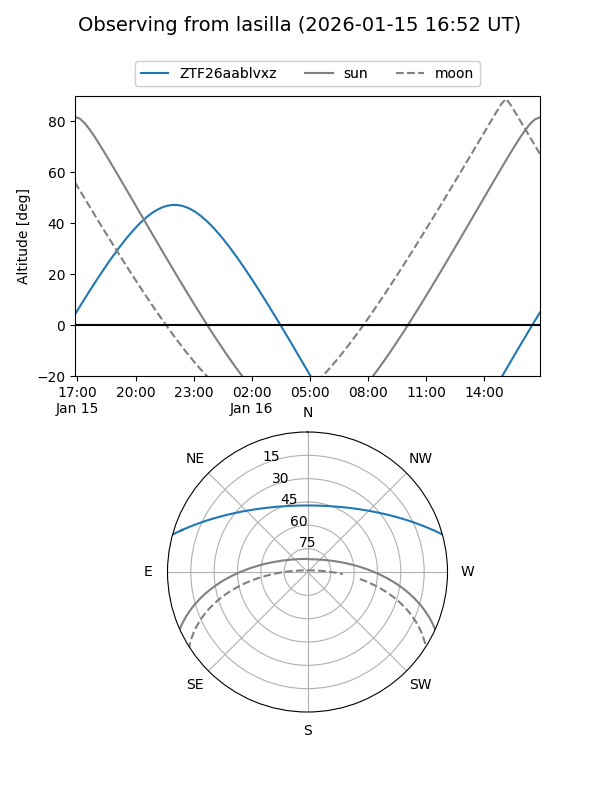
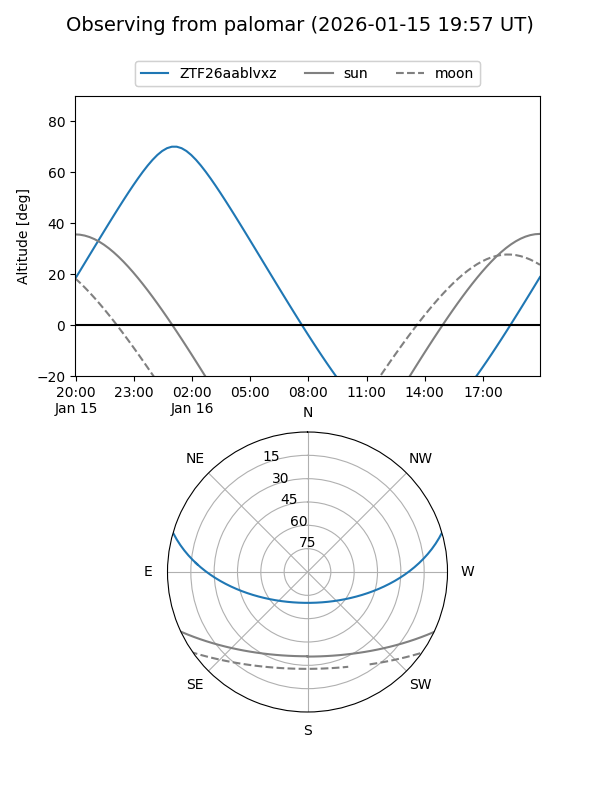

ZTF26aablvxz
Target ZTF26aablvxz at 2026-01-16 05:55
Aliases and brokers:
FINK: link
Lasair: link
ALeRCE: link
alt names
ZTF26aablvxz (ztf,fink_ztf)
Coordinates:
equatorial (ra, dec) = 14.4236,+13.37096
equatorial (HMS+DMS) = 00:57:41.67,+13:22:15.46
galactic (l, b) = (125.2741,-49.47233)
Flags:
Photometry:
last ztfr=19.74
1 ztfr detections
Lightcurve

Visibility


Additional plots